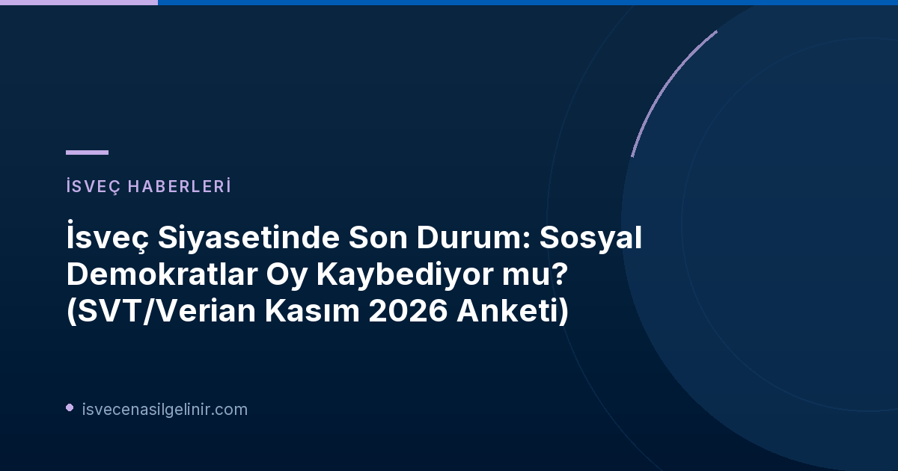

İsveç Siyasetinde Son Durum: Sosyal Demokratlar Oylarını Kaybediyor mu?
2026 yılı Kasım ayı itibarıyla İsveç siyaseti, SVT/Verian tarafından açıklanan son kamuoyu yoklaması sonuçlarıyla yeni bir dönemece girdi. Ülke genelinde yapılan bu kapsamlı anket, özellikle iktidardaki Sosyal Demokratlar Partisi (S) için düşüş sinyalleri verirken, Moderatlar (M) liderliğindeki Tidö partileri koalisyonunun yükselişini gözler önüne seriyor. Bu durum, gelecekteki hükümet dengeleri ve potansiyel erken seçim senaryoları üzerinde önemli tartışmaları beraberinde getiriyor.
SVT/Verian Kasım Anketinin Detayları
SVT ve Verian işbirliğiyle 26 Ekim – 8 Kasım 2026 tarihleri arasında gerçekleştirilen bu kamuoyu araştırması, İsveç toplumunun siyasi eğilimlerini yansıtan önemli veriler sunuyor. Yaklaşık 3.000 kişiyle yapılan görüşmelerle oluşturulan Sifo panel verileri, demografik gruplara göre titizlikle kontrol edildi. Anketin temel sorusu ise "Bugün seçim olsa hangi partiye oy verirdiniz?" oldu. İşte öne çıkan sonuçlar:
Magdalena Andersson Liderliğindeki S'in En Düşük Oy Oranı
Anketin en çarpıcı sonucu, Sosyal Demokratlar'ın oy oranındaki düşüş oldu. Magdalena Andersson'ın parti lideri olduğu 2021 sonbaharından bu yana kaydedilen en düşük seviye olan %26.1'e gerileyen S, seçmen desteğinde belirgin bir kayıp yaşadı. Bu düşüşün temel nedenlerinden biri olarak, Andersson'ın hükümet kurma sürecindeki "başarısızlığına" yönelik artan eleştiriler gösteriliyor. SVT'nin iç politika yorumcusu Elisabeth Marmorstein, "Vaat edilen güçlü başbakan hükümeti kurmayı başaramadı ve bunun kamuoyunda bir cezası olması açık" yorumunu yapıyor.
Moderatlar Yükselişte: Tidö Partileri Önde
Sosyal Demokratlar'ın aksine, Moderatlar (M) oy oranlarını artırmaya devam ediyor. %23.3'e ulaşan Moderatlar, Sosyal Demokratlar ile aralarındaki farkı yaklaşık üç yüzde puanına indirdi. Dahası, Tidö partileri (sağ blok) dört yıldan uzun bir süre sonra ilk kez Verian anketlerinde kırmızı-yeşil partileri (sol blok) geride bıraktı. Tidö partileri toplamda %50.6 oy alırken, kırmızı-yeşil partiler %47.7'de kaldı. Bu fark istatistiksel olarak anlamlı olmasa da, sağ blokun yükseliş trendini gösteriyor. Verian kamuoyu araştırmaları sorumlusu Per Söderpalm, "Moderatların bloklar arası seçmen çekmeyi başarması, Tidö partilerinin kırmızı-yeşilleri geçmesinin ana nedeni" şeklinde açıklıyor.
Diğer Partilerde Durum Ne?
- Sol Parti (V): %8.5 oy oranıyla seçim sonuçlarına yakın bir seviyede kaldı. Elisabeth Marmorstein'a göre bu durum, hükümet müzakerelerinde Sol Parti'nin bakanlık taleplerinde geri adım atmayacağını gösteriyor.
- Merkez Parti (C): Üst üste ikinci ay düşüş yaşayarak %5.7'ye geriledi. Bu oran, Haziran ayından bu yana Merkez Parti'nin en düşük desteği ve seçim sonuçlarına kıyasla önemli bir düşüş. Merkez Parti, seçmenlerini ağırlıklı olarak Moderatlara ve kısmen de Sosyal Demokratlara kaptırıyor. Parti'nin hükümet kurma konusundaki belirsiz yol haritası, seçmen kaybında etkili olmuş olabilir.
SVT/Verian Kasım 2026 Anket Sonuçları ve Değişimler
| Parti | Oy Oranı (%) | Ekim Ayına Göre Değişim (yüzde puanı) |
|---|---|---|
| Sosyal Demokratlar (S) | 26.1 | ▼ (İstatistiksel olarak anlamlı düşüş) |
| Moderatlar (M) | 23.3 | ▲ 1.0 |
| Sol Parti (V) | 8.5 | Stabil |
| Merkez Parti (C) | 5.7 | ▼ (İstatistiksel olarak anlamlı düşüş) |
| Hıristiyan Demokratlar (KD) | Bilinmiyor | ▲ 0.4 |
İsveç'te siyasi gelişmeleri yakından takip etmek, İsveç Vatandaşlık Sınavı hazırlık sürecinizde veya İsveç'e göç planlarınızda size ışık tutabilir.
Seçim Sürecine Etkileri ve Gelecek Senaryoları
Sosyal Demokratlar'ın kamuoyu desteğindeki bu düşüş, İsveç'teki hükümet kurma sürecini daha da karmaşık hale getirebilir. Parlamentodaki sandalye dağılımını doğrudan etkileyen bu tür anketler, partilerin müzakere güçlerini ve koalisyon olasılıklarını yeniden şekillendiriyor.
Hükümet Kurma Sürecinin Etkileri
Per Söderpalm'ın belirttiği gibi, Tidö partilerinin kırmızı-yeşil blokun önüne geçmesi, hükümet kurma sürecinde sağ blokun elini güçlendirebilir. Ancak genel farkın istatistiksel olarak anlamlı olmaması, dengelerin hala hassas olduğunu gösteriyor. Elisabeth Marmorstein, Sosyal Demokratlar'ın düşüşünün erken seçim korkusunu artırdığını ve bu durumun partiyi zorlayabileceğini belirtiyor.
Parti Liderlerinin Açıklamaları ve Yorumlar
Magdalena Andersson'ın hükümet kurma konusundaki "bjuda till" (uzlaşmaya açık olma) çağrısı ve Sol Parti'nin bakanlık taleplerinden vazgeçmeyeceği yönündeki duruşu, müzakerelerin çetin geçeceğine işaret ediyor. Merkez Parti'nin ise "yol seçimi" konusundaki belirsizliği, gelecekteki siyasi konumunu daha da zorlaştırabilir. "Svekdebatt" (ihanet tartışması) riski, parti için önemli bir tehdit oluşturuyor.
İsveç siyasetindeki bu hareketli dönem, ülkenin yakın gelecekteki iç ve dış politikalarını şekillendirecek kritik kararların habercisi olabilir. Kamuoyu yoklamaları, siyasi partiler için birer yol gösterici niteliği taşırken, aynı zamanda seçmenlerin beklenti ve tepkilerini de gözler önüne seriyor.
Referanslar: SVT Nyheter
İsveç'e Göç ve Vatandaşlık Süreçleri
İsveç'teki siyasi gelişmeler, göçmenlik ve vatandaşlık süreçlerini de etkileyebilir. İsveç'e taşınma, çalışma veya vatandaşlık başvurusu yapmayı düşünüyorsanız, güncel bilgilere ve uzman rehberliğine ihtiyacınız olabilir.